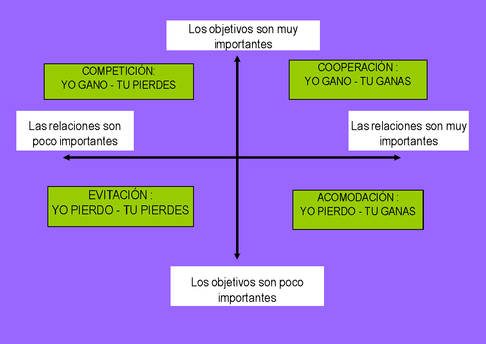

2.1 Importancia de la forma en que se resuelven los conflictos: Actitudes ante el conflicto.
Describimos cuatro actitudes básicas hacia los conflictos. Dichas actitudes responden a un modelo bidimensional del conflicto, que sitúa las distintas posibles actitudes ante el conflicto de acuerdo con dos grandes ejes: compromiso para con la relación y compromiso para con los objetivos.
Modelo de competición: utilizando estrategias que derroten a la otra persona y le impongan nuestra voluntad, es el modelo “del más fuerte”. Nos encontramos ante una situación en la que conseguir lo que yo quiero, hacer valer mis objetivos, mis metas, es lo más importante, no importa que para ello tenga que pasar por encima de quien quiera. La relación no importa.
Modelo de evitación: utilizando estrategias de huida, de manera que nadie obtiene lo que desea, es el modelo “de esconder la cabeza bajo el agua”, se busca evitar el estallido o el desarrollo de un conflicto abierto. No enfrentamos los conflictos, por miedo o por pensar que se resolverán por si solos. Ni los objetivos, ni la relación salen bien parados, no se consiguen ninguno de los dos.
Modelo de acomodación: utilizando estrategias de renuncia a los propios objetivos para que la otra persona obtenga lo que quiera, es el modelo “de la tirita”, solución rápida para salir del paso y no perder la relación. Con tal de no confrontar a la otra parte yo no hago valer ni planteo mis objetivos. Es un modelo tan extendido o más que la competición. Vamos aguantando hasta que no podemos y entonces nos destruimos o destruimos a la otra parte.
Modelo de cooperación: utilizando estrategias que nos permitan obtener algunos de nuestros intereses a cambio de ceder en otros. Se contemplan los intereses de ambas partes. Es el modelo del “colaborador”. En este modelo conseguir los propios objetivos es muy importante, pero la relación también. Tiene mucho que ver con algo muy intrínseco a la filosofía “noviolenta”: el fin y los medios tienen que ser coherentes. Es el modelo al que vamos a intentar encaminar la vida en los centros educativos.

TU GANAS – YO GANO.
Se trata de que todos y todas ganemos. No siempre es posible que todos lo ganen todo, pero han de percibir que ganan algo en las soluciones. Las dos partes consideran que han ganado algo. Cooperar no es acomodarse, no puede ser renunciar a aquello que nos es fundamental, de hecho hay que aprender a NO ceder en lo fundamental. Otra cosa diferente es que se puede ceder en lo que es menos importante
Es importante recalcar que la mayor parte de nosotros adoptamos distintas actitudes ante el conflicto. Ninguna de estas actitudes podemos decir que se den, habitualmente de una forma pura y única en ninguna situación o persona. Tampoco hemos de plantear que haya actitudes malas y otras buenas para toda situación. Sin embargo, este esquema nos plantea algo muy importante y es que cuanto más importantes sean los objetivos y la relación, más importante será aprender a cooperar.
Un ejemplo sería cuando estamos con un grupo de profesores de un claustro en un grupo de trabajo o curso y se toman decisiones por mayorías muy ajustadas. El grupo que pierde la votación no se irá especialmente contento. Si esto ocurre a menudo, normalmente, lo que acabará ocurriendo es que el grupo que perdió haga una de estas dos cosas ( a cada cual peor): que ponga obstáculos para que NO se lleve a efecto lo decidido o que se vaya inhibiendo de las responsabilidades o tareas de ese curso o grupo de trabajo.
En todo conflicto, de alguna manera y paradójicamente, las partes cooperan pero, generalmente, para destruirse. Se trata de aprender que lo que puede parecer la mejor estrategia individual puede ser la peor estrategia colectiva. Aprender que con quien tenemos un conflicto no tiene porque ser nuestro enemigo y que la mejor alternativa puede ser no competir con él, sino colaborar juntos para resolverlo de la manera más satisfactoria para ambos. El gran reto es empezar a hacer ver a las partes que cooperar es mejor, ya no sólo desde el punto de vista ético, sino también desde el punto de vista de la eficacia.
“Sólo se conoce bien con el corazón” - El Principito -